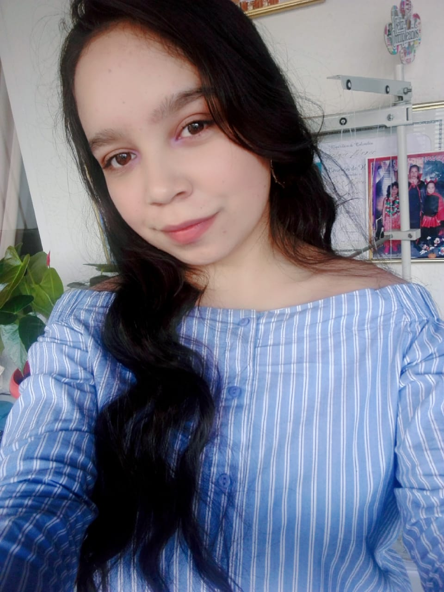

Técnica en sistemas del Servicio Nacional de Aprendizaje (SENA). Egresada del centro de electricidad
electrónica y telecomunicaciones (CEET). Actualmente soy aprendiz del tecnólogo Análisis y desarrollo
de sistemas de información, con conocimientos en lenguajes tales como Html, CSS, JavaScript, Java y sql.
Cuento con 8 meses de experiencia laboral en la empresa multinacional Nielsen en el que desempeñe el
cargo de Especialista.